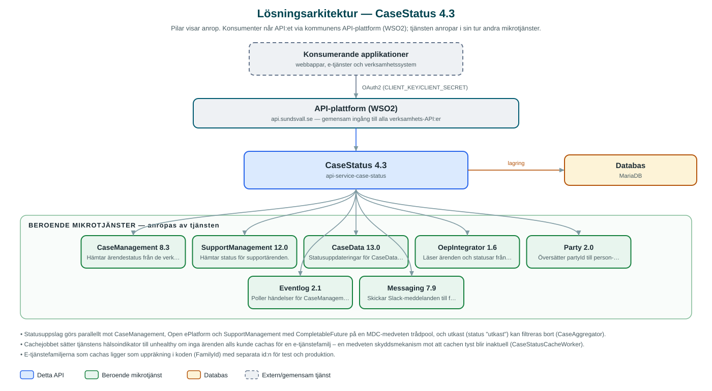

CaseStatus
Samlar ärendestatus från flera bakomliggande system och ger invånare och företag en aktuell bild av var deras ärenden befinner sig.
Om API:et
CaseStatus svarar på frågan "hur går det med mitt ärende?" oavsett i vilket system ärendet handläggs. API:et hämtar och slår samman status från CaseManagement (som i sin tur täcker bland annat ByggR och Ecos), SupportManagement och e-tjänsteplattformen Open ePlatform, och exponerar dem samlat per externt ärende-id, organisationsnummer eller part.
Uppslagen mot källsystemen görs parallellt och statusarna normaliseras via en gemensam statusvokabulär, så att konsumerande applikationer får enhetliga statusbegrepp oavsett källa. För företagsärenden i e-tjänsteplattformen finns dessutom en schemalagd cache som regelbundet läser in ärenden och statusar per e-tjänstefamilj och sparar dem i tjänstens databas.
API:et arbetar också aktivt med statusuppdateringar: schemalagda jobb läser händelser ur Eventlog för CaseManagement- och CaseData-ärenden och skriver tillbaka aktuell status till e-tjänsteplattformen, så att invånarens "Mina sidor" hålls uppdaterade. Misslyckade uppdateringar rapporteras till förvaltningen via Slack-meddelanden genom Messaging.
Det här gör API:et
- Status per ärende – Aktuell status för ett enskilt ärende via dess externa ärende-id, oavsett bakomliggande system.
- Status per part eller företag – Alla ärendestatusar för en part (partyId) eller ett organisationsnummer, sammanslagna från flera källsystem.
- Parallell aggregering med enhetlig vokabulär – Källsystemen frågas parallellt och statusarna översätts till gemensamma statusbegrepp via en statusvokabulär.
- Automatisk statusuppdatering till e-tjänsten – Schemalagda jobb läser händelser ur Eventlog och skriver tillbaka ny status till Open ePlatform via OepIntegrator.
- Cache för företagsärenden – Ett schemalagt jobb läser in företagsärenden per e-tjänstefamilj från e-tjänsteplattformen och cachar status i databasen.
- Ärende-PDF – Hämtar ärendet som PDF från e-tjänsteplattformen via OepIntegrator.
API-dokumentation
API:ets samtliga resurser, parametrar och datamodeller finns beskrivna i en OpenAPI-specifikation som är hämtad ur källkodsförrådet. Den kan utforskas interaktivt i Swagger UI eller laddas ner som YAML.
Teknisk dokumentation
Nedan beskrivs hur tjänsten är uppbyggd, vilka andra tjänster den anropar och vad som krävs för att driftsätta den. Informationen är härledd ur källkoden och dess konfiguration på GitHub.
Arkitektur

API:et är en mikrotjänst (Java 25, Spring Boot via kommunens gemensamma tjänsteplattform dept44 (8.0.8), byggd med Maven). Konsumenter når tjänsten via kommunens gemensamma API-plattform (WSO2) på api.sundsvall.se – tjänsten anropas aldrig direkt. Tjänsten anropar i sin tur andra mikrotjänster i kommunens tjänstelandskap. Lagring: MariaDB med Flyway-migrationer; cachade företagsärenden och statusmappningar lagras här.
Teknikstack
- Språk: Java 25
- Ramverk: Spring Boot via kommunens gemensamma tjänsteplattform dept44 (8.0.8), byggd med Maven
- Databas: MariaDB med Flyway-migrationer; cachade företagsärenden och statusmappningar lagras här
- Övrigt: Parallella uppslag med CompletableFuture och MDC-medveten trådpool, schemalagda jobb med Dept44Scheduled/Shedlock, Resilience4j (circuit breakers)
Beroenden till andra mikrotjänster
Tjänsten anropar följande mikrotjänster. Versionerna är hämtade ur källkodens integrationsklienter.
| Tjänst | Version | Användning |
|---|---|---|
| CaseManagement | 8.3 | Hämtar ärendestatus från de verksamhetssystem CaseManagement integrerar (ByggR, Ecos med flera). |
| SupportManagement | 12.0 | Hämtar status för supportärenden. |
| CaseData | 13.0 | Statusuppdateringar för CaseData-ärenden hämtas via händelseflödet och skrivs tillbaka till e-tjänsten. |
| OepIntegrator | 1.6 | Läser ärenden och statusar från Open ePlatform samt skriver tillbaka statusuppdateringar och hämtar ärende-PDF. |
| Party | 2.0 | Översätter partyId till person- eller organisationsnummer. |
| Eventlog | 2.1 | Poller händelser för CaseManagement- och CaseData-ärenden som utlöser statusuppdateringar. |
| Messaging | 7.9 | Skickar Slack-meddelanden till förvaltningen när en statusuppdatering misslyckas. |
Konfiguration och driftsättning
- application.yml med URL och OAuth2-klientuppgifter för de sju beroende mikrotjänsterna
- MariaDB-anslutning; databasschemat versionshanteras med Flyway
- Cron-uttryck för cachejobbet och Eventlog-pollningen (separata scheman för CaseManagement- och CaseData-händelser)
- Anrop görs per kommun – municipalityId ingår i alla API-vägar
Noterbart ur källkoden
- Statusuppslag görs parallellt mot CaseManagement, Open ePlatform och SupportManagement med CompletableFuture på en MDC-medveten trådpool, och utkast (status "utkast") kan filtreras bort (CaseAggregator).
- Cachejobbet sätter tjänstens hälsoindikator till unhealthy om inga ärenden alls kunde cachas för en e-tjänstefamilj – en medveten skyddsmekanism mot att cachen tyst blir inaktuell (CaseStatusCacheWorker).
- E-tjänstefamiljerna som cachas ligger som uppräkning i koden (FamilyId) med separata id:n för test och produktion.
- Misslyckade statusuppdateringar mot e-tjänsteplattformen rapporteras med formaterade Slack-meddelanden via Messaging, inklusive request-id för felsökning (EventLogWorker).
Källkod
Källkoden är öppen och finns hos Sundsvalls kommun på GitHub. I källkodsförrådet finns även instruktioner för att klona, konfigurera och starta tjänsten i egen miljö.